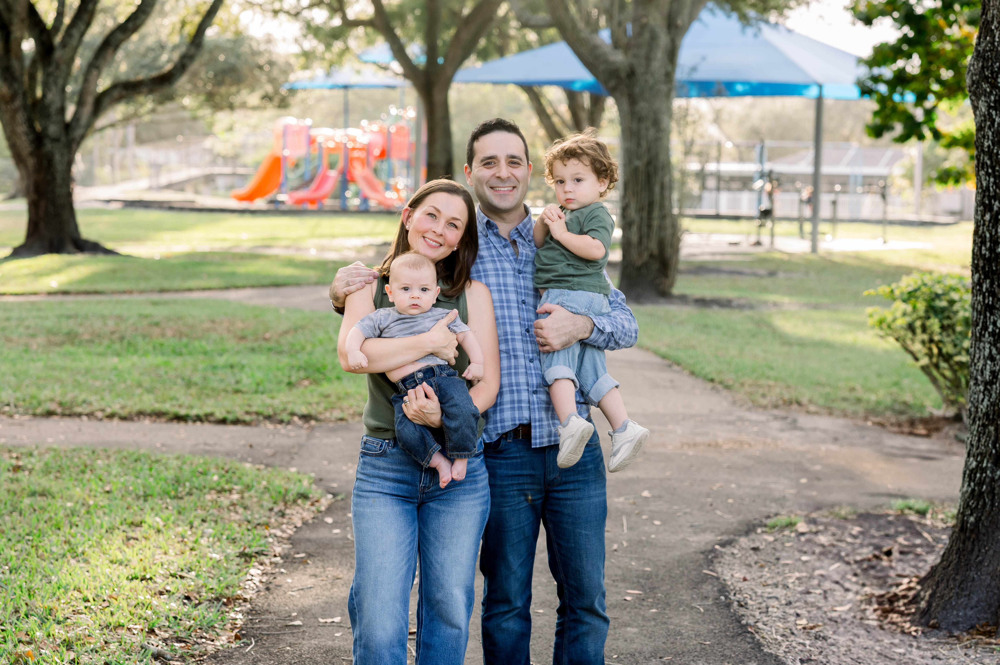

I am running for Cooper City Commission because I believe in the importance of service, and I feel most useful when I am serving others and giving back. I want to help keep Cooper City special — to ensure it remains safe, affordable, and livable for both new families putting down roots and longtime residents who have built this community over decades.
Like many young parents, my wife and I live in Cooper City because it is the best possible environment to raise a family. Our public schools are excellent, our neighborhoods are safe and welcoming, and there is a genuine sense of community that is hard to find. From Founder's Day to Light Up Cooper City, kids flooding the streets for Halloween or hellos to familiar faces on morning walks, we love participating in the traditions and routines that bring families together and strengthen the bonds between neighbors.
Professionally, I bring a strong foundation in governance and financial management. My experience as an attorney and CPA give me the skills I need to effectively manage city business. Cooper City faces challenges, from infrastructure improvement to maintaining public safety, to smart development and responsible spending. I'm well equipped to size up the details of the issues and make decisions grounded in common sense.
Being involved is important to me. I currently serve as Board Treasurer of Big Brothers Big Sisters of Broward County, where I provide financial oversight for an organization dedicated to mentoring and empowering young people. I am a member of the Health and Disabilities Impact Team at the Jewish Federation of Broward County, which provides funding to Broward non-profits helping adults and children with special needs. I also serve on the board of the Digital Democracy Project, which uses innovative technology to gather real-time feedback on how voters feel about current political issues. I previously worked as the General Counsel for an organization focused on voting reforms aimed at curbing extreme partisanship, saving money, and avoiding voting schemes like ghost candidates. I also previously served on Broward County's Consumer Protection Board.
I love Cooper City and want to do my small part to make it the best city it can be. I would be honored to be your Commissioner.